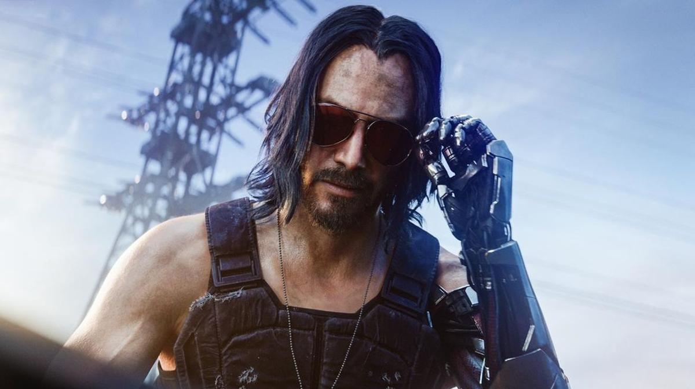

Night City
November 16, 2023 by Johnny Silverhand
I saw corps transform Night City into a machine fueled by people's crushed spirits, broken dreams and emptied pockets. Corps've long controlled our lives, taken lots and now they're after our souls! I've declared war not 'cause capitalism's a thorn in my side or outta nostalgia for an America gone by. This war's a people's war against a system that's spiralled outta our control.
Johnny Silverhand, born Robert John Linder, was a famous and influential rockerboy and lead singer of the band Samurai before its breakup in 2008. A military veteran who defined the rockerboy movement as it is known today, Silverhand was the most prominent figure who fought against the corrupt American government and megacorporations, often being described as a terrorist because of this. Despite being charismatic and quite the charmer, he was also known to be irrational, impulsive, and manipulative.